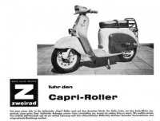

OK, ganz so klein ist meine Roller-Vorgeschichte dann doch nicht geworden. Zwar war mein erstes motorisiertes Zweirad eine Zündapp Super Combinette, also ein Moped. Aber als ich dann einen Capri 50 für 50 DM bekommen konnte, habe ich umgesattelt. Schliesslich bin ich mit dem Zweirad das ganze Jahr, also auch im Winter, zur Schule nach Buer gefahren. Und das war mit dem kleinen Capri-Roller doch angenehmer als auf der ungeschützten Zündapp.
Meine Roller-Historie:
Capri Agrati 50 ccm: Mein erster Roller, gekauft vom Opa eines Schulfreundes. War ein Mokick-Roller, also nur mit Versicherungskennzeichen und hatte satte 2 PS – viel, verglichen mit den 1,4 PS meiner Zündapp Combinette. Der Capri hat mich eigentlich immer irgendwie ans Ziel gebracht, dennoch ist er in meiner Erinnerung als schlecht verarbeitetes Rollerchen haften geblieben, an dem ich ständig irgend etwas schrauben musste.

Heinkel A0 175 ccm: Ich hatte insgesamt drei Heinkel-Roller, aber keiner war je von mir angemeldet. Mit dem ersten, einem 103A0, bin ich dennoch viel gefahren und hab den Viertaktmotor hoch gedreht wie bei einer Honda. Hat der brave Heinkel aber alles gut überstanden und heute wäre ich froh, ich hätte alle meine drei Heinkel noch.
Vespa GS150: 1972 hatte ich ein paar Monate kein fahrbereites Motorrad, wobei ich heute nicht mehr weiss, woran das lag. Aber mein Kumpel Helmut und ich wollten zur IFMA nach Köln fahren und so besorgte ich für ganz kleines Geld eine Vespa GS 150. Diese Sportausführung eines Tourenrollers wurde von mir abenteuerlich in Grün-Rot lackiert und dann zugelassen. Und dann gings auf den Weg nach Köln zur IFMA, der damals grössten Motorradmesse Deutschlands. Ich wog damals vielleicht 70 kg, Helmut mindestens 100 kg, und ich hetzte die kleine Vespa mit Vollgas über die Autobahn nach Köln. Tatsächlich kamen wir auch dort an, stellten den Roller im Parkhaus ab und berauschten uns an der unglaublichen Schönheit der ausgestellten Motorräder.
Abends gings dann ins Parkhaus, die Vespa wurde angekickt und sofort die Parkhausserpentinen herunter gehetzt. Noch bevor wir am Ausgang ankamen, ging der Kolben kreischend fest und ich konnte die schlitternde Fuhre gerade noch abfangen. Nach einer Zigarettenpause sprang die Vespa wieder an und ab gings wieder auf die Autobahn – diesmal aber unter besorgniserregenden Geräuschen.
Mittlerweile war es dunkel und wir wollten heim – also gab es wieder nur eines für den Roller: Vollgas. Zweimal kam noch ein Klemmer, aber die hatte ich erwartet und konnte frühzeitig auskuppeln. Danach aber lief der Roller wie geschmiert, die Geräuschkulisse wurde besser und mit Höchstgeschwindigkeit trieb ich den Roller nach Hause.
Die Vespa hat das alles gut überstanden, aber das habe ich damals nicht zu schätzen gewusst. Ich wollte keinen Roller mehr, die Handschaltung war nervig und der Eisdieleneffekt ging gegen Null. Nur wenige Tage nach der IFMA-Fahrt habe ich die Vespa verschenkt, ich glaube, an Ingo. Aber da bin ich mir nicht mehr sicher. Und genau diesen Roller hätte ich heute liebend gern wieder – vorbei.
Vespa 50N: Zwischenzeitlich stand mal ein paar Monate eine Vespa 50N in der angemieteten Zweirad-Scheune. Die hatte ich als kostenlose Dreingabe beim Abholen der IZH-Sammlung aus Alsfeld erhalten. Leider hatte ich damals überhaupt keinen Sinn für Vespa und habe den kleinen, rostigen Roller weiter verschenkt. Wieder einer der vielen Fehler, die ich im Leben gemacht habe.
Vespa GTS125: 2012 habe ich mir wieder einen Roller geholt, eine Vespa GTS 125 mit Viertaktmotor. Das sollte wirklich nur ein Arbeitsfahrzeug für den Weg in die Firma werden. Aber dann hat mir der Roller soviel Spass gemacht, dass ich kurz danach eine weitere Vespa gekauft habe, diesmal eine 200er Cosa mit Seitenwagen. Und seitdem bin ich der Vespa-Sucht voll verfallen. Kurz nach der GTS lief mir dann noch eine weitere 200ccm Cosa vor die Füße und jetzt suche ich noch eine alte Vespa aus den 50er oder 60er Jahren. Mich hat’s erwischt.
Schaltroller: Relativ schnell kamen dann die ersten Vespa Schaltroller hinzu: Zuerst das Vespa Cosa Gespann, dann eine grüne Solo-Cosa, die für den anfangs angedachten Einsatz als Teileträger viel zu schade war. Ohne meinen Willen folgte eine kleine Vespa PK50XL und jetzt bin ich auf der Suche nach einem Capri Roller. Merkt ihr was? Der Roller-Kreis wäre dann geschlossen. Wie ein Lebenszyklus beginnt und endet alles mit einem Capri -vielleicht. Denn erst einmal muß ich einen bekommen.
Das aber geht viel schneller, als gedacht! Zwischen 2012 und 2015 wächst mein Schaltrollerbestand geradezu gigantisch an. So sammeln sich etwa 3,5 Capri-Roller an, einer mit Sachs-Motor, die anderen mit Antrieben von Garelli. Allerdings sind sämtliche Capris massive Baustellen.
Dann kommt eine kleine Vespa PK50 hinzu, die gerade einmal 1000 Kilometer auf dem Buckel hatte. Die bekam recht schnell eine 65 ccm-Kur von mir verpasst und wurde dadurch regelrecht fahrbar.
Es geht weiter mit zwei Vespa Cosa 200, eine sogar als Gespann. Die beiden Cosa habe ich gleichzeitig geliebt und gehasst - geliebt, weil sie sich wirklich prima fahren liessen, gehasst, weil das Schrauben an den verbauten Konstruktionen jedesmal die Höchststrafe war.
Einen totalen Exoten holte ich mir aus Litauen in Form einer Vjatka 150! Das war ein spannender Roller, massiv wie ein russisches Fahrzeug nur sein kann, dabei - weil abgekupfert - schön wie das italienische Vorbild.
Und an einem 150er Lambretta-Roller konnte ich auch nicht vorübergehen, schliesslich habe ich auf so einem Ungeheuer meinen Motorrad-Führerschein absolviert. Leider habe ich auch hier unterschätzt, wie verbaut und schlecht beschraubbar die Firma NSU den Roller fabriziert hat.
Zeitweise sah es vor meiner kleinen Werkstatt dann so aus, wie im folgenden Bild.
{kind=link}
Irgendwann hab ich dann aber doch gemerkt, dass so viele Fahrzeuge kein Quell der Freude mehr sind, sondern Last und Belastung. So verschwanden nach und nach all diese Roller wieder - bis auf die Vespa GTS125, mit der ich heute noch viel Spaß habe. Jetzt lass ich es aber gut sein mit der “kurzen” Vorgeschichte und konzentriere mich auf die GTS und die kleinen Fluchten damit.